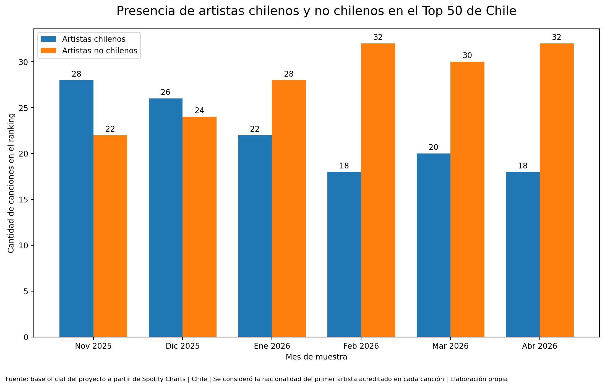

Una mirada al ranking chileno de Spotify para observar cómo conviven los artistas nacionales con las tendencias regionales e internacionales dentro de una misma lista de reproducción masiva.
Cada vez que una canción aparece en un ranking musical, hay algo más que un número detrás. Hay personas escuchando, compartiendo, repitiendo y haciendo que ciertos sonidos se vuelvan parte de la rutina. Por eso, mirar los rankings de Spotify permite observar no solo qué canciones fueron populares, sino también qué lugar ocupan los artistas locales dentro del consumo musical.
Esta pieza forma parte de la webstory grupal ¿Escuchamos lo mismo en Latinoamérica?, un proyecto que compara rankings musicales de distintos países de la región para identificar coincidencias, diferencias y tendencias en la forma en que escuchamos música.
En Chile, el ranking de Spotify muestra un movimiento constante. Algunas canciones entran con fuerza, se instalan por unos días o semanas, y luego desaparecen de los primeros lugares. Otras, en cambio, parecen resistir mejor el paso del tiempo. Pero al mirar quiénes están detrás de esas canciones, aparece una pregunta más amplia: ¿cuánto espacio tienen los artistas chilenos dentro del ranking nacional?
Esa pregunta permite mirar el ranking más allá de una simple lista de canciones populares. En una misma tabla conviven artistas nacionales, nombres consolidados de la escena latinoamericana y figuras internacionales que circulan con fuerza en plataformas digitales. Así, el consumo musical chileno no se explica solo desde lo local ni solo desde lo extranjero, sino desde una mezcla de ambos mundos.
La presencia de artistas chilenos muestra que existe una audiencia que reconoce y sostiene parte de la producción musical local. Sin embargo, los artistas no chilenos también ocupan un espacio importante, lo que evidencia cómo las plataformas digitales conectan rápidamente a las audiencias con tendencias que cruzan fronteras.
En ese sentido, el caso chileno permite observar una tensión interesante: el ranking nacional funciona como una vitrina para artistas locales, pero también como reflejo de una circulación musical latinoamericana e internacional. Escuchar música en Chile, entonces, también implica participar de una conversación sonora mucho más amplia.
La siguiente visualización muestra la presencia de artistas chilenos y no chilenos en el Top 50 de Spotify en Chile durante los meses analizados. Esta comparación permite observar cuánto espacio ocupan los artistas locales dentro de un ranking atravesado por tendencias nacionales, regionales e internacionales.

Los datos muestran que, aunque los artistas chilenos tienen una presencia relevante dentro del ranking nacional, los artistas no chilenos también ocupan una parte importante de las posiciones. Esto refuerza la idea de que el consumo musical en Chile combina identidad local con una fuerte circulación latinoamericana e internacional.
El ranking chileno de Spotify muestra una convivencia entre artistas nacionales y no chilenos. Esta mezcla permite observar que el consumo musical en Chile no se construye únicamente desde la escena local, sino también desde canciones, artistas y tendencias que circulan por toda Latinoamérica y por plataformas digitales globales.
Esta pieza fue elaborada a partir de la base oficial del proyecto, construida con datos revisados desde rankings de Spotify Charts, como parte del trabajo grupal sobre música y consumo digital en Latinoamérica.
Puedes revisar más información en el sitio oficial de Spotify Charts.